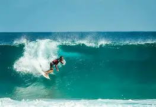
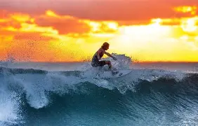
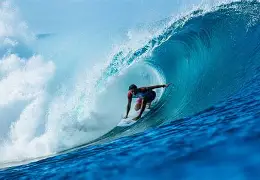
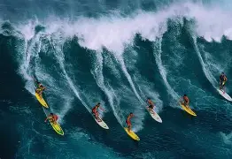

Nuestro objetivo es ayudar a las personas a aprender sobre el surf. Es mostrar a las personas la importancia del surf, porque este deporte ayuda a nuestro país en lo económico, luego queremos mostrar las mejores playas de nuestro país para practicar surf.

Te permite comprobar las condiciones del mar y las olas rápidamente. Ayuda a planificar las sesiones de surf de manera más segura y eficiente.

Elijo este sitio web porque me informa sobre lo que ocurre entre las olas. Aquí puedes encontrar información sobre las últimas noticias de la competición.

Además, Tide tiene como objetivo crear una comunidad de surfistas que puedan descubrir nuevos lugares y compartir experiencias.
